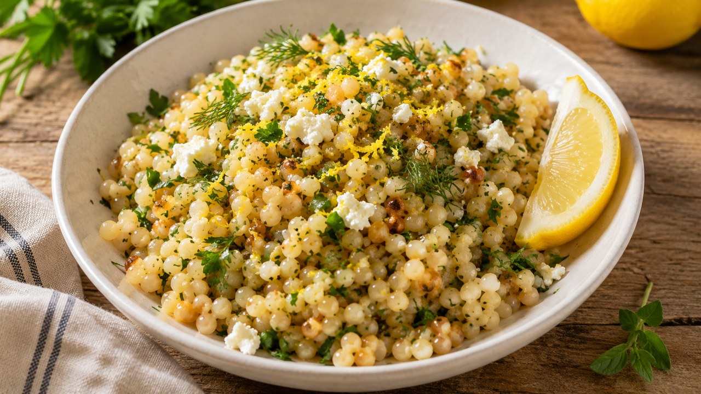

Greek · Dinner · Serves 4 · Approximately 35 min
Greek Chicken Souvlaki with Lemon-Herb Pearl Couscous

Ingredient amounts are estimates when scaled. Original recipe and AnyList import remain unchanged.
Ingredients
- 1¾ lb boneless skinless chicken thighs, cut into chunks
- 1 Tbsp olive oil, for chicken
- ½ lemon, juiced, for chicken
- 2 garlic cloves, minced, for chicken
- 1 tsp dried Greek oregano, for chicken
- 1 tsp kosher salt, plus to taste
- ½ tsp black pepper
- 4 pita breads
- ¾ cup plain Greek yogurt
- 1 Tbsp chopped fresh dill, for sauce
- 1 garlic clove, minced, for sauce
- ½ lemon, juiced, for sauce
- 1 tomato, chopped
- 1 bell pepper, sliced
- ¼ red onion, sliced
- 1 Tbsp olive oil, for salad
- 2 oz feta, optional, for salad
- 1½ cups dry pearl couscous
- 2 cups chicken broth
- 1 tbsp olive oil
- 2 cloves garlic, minced
- Zest of 1 lemon
- 2 tbsp fresh lemon juice
- 2 tbsp chopped fresh parsley
- 1 tbsp chopped fresh dill (optional)
- ½ tsp dried oregano
- Salt and black pepper to taste
- 2 tbsp crumbled feta (optional)
Instructions
- Heat oven to 425°F if roasting the chicken. Toss chicken with 1 Tbsp olive oil, juice of half a lemon, 2 minced garlic cloves, 1 tsp oregano, salt and pepper. Thread onto skewers or arrange on a sheet pan.
- Roast chicken in oven for about 15–20 minutes (or grill 10–14 minutes), until it reaches 165°F. Rest 3 minutes.
- For the lemon-herb pearl couscous: Heat olive oil in a saucepan over medium heat. Add pearl couscous and toast for 2–3 minutes until lightly golden.
- Add garlic and oregano; cook for 30 seconds.
- Add chicken broth, bring to a simmer, cover, and cook for 10–12 minutes or until tender.
- Remove from heat and stir in lemon zest, lemon juice, parsley, and dill.
- Season with salt and pepper. Finish with feta if desired.
- Stir yogurt with 1 Tbsp dill, 1 minced garlic clove, juice of half a lemon and salt to make cucumber-free tzatziki-style sauce.
- Warm pita; toss tomato, pepper and red onion with 1 Tbsp olive oil and optional feta. Serve with chicken and lemon-herb pearl couscous.